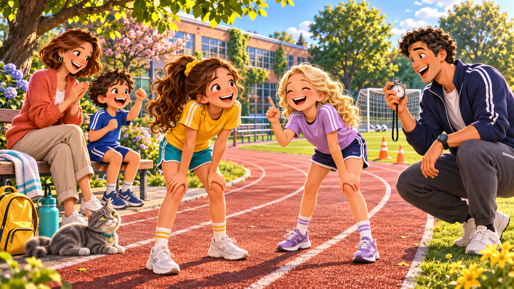
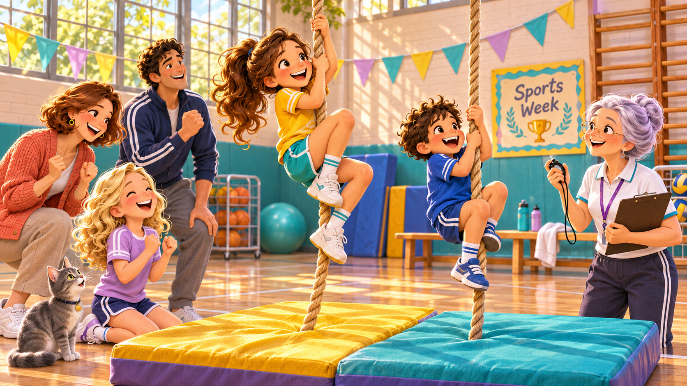
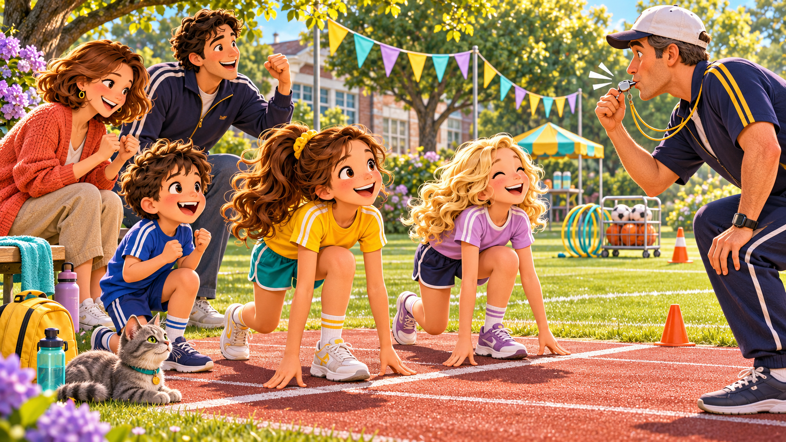
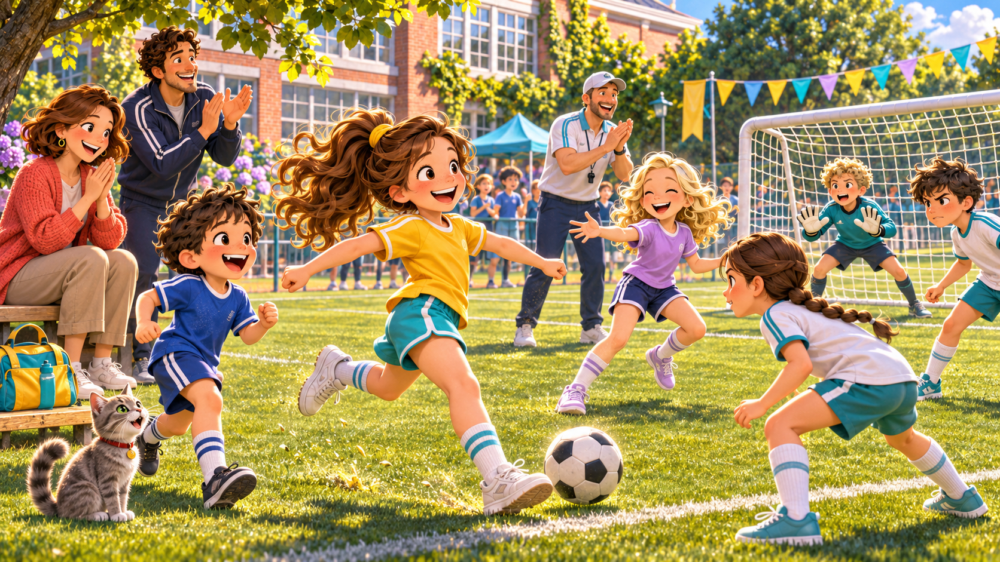
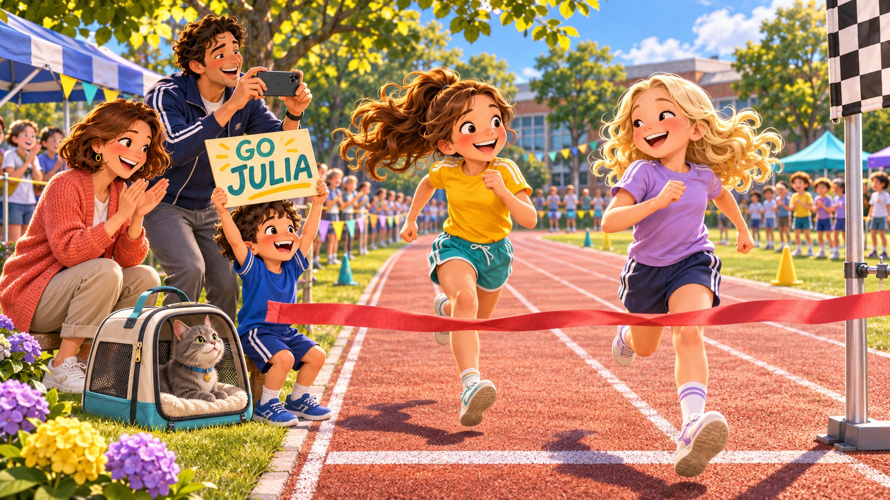
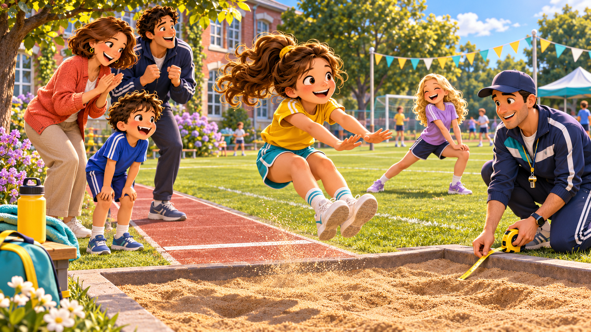
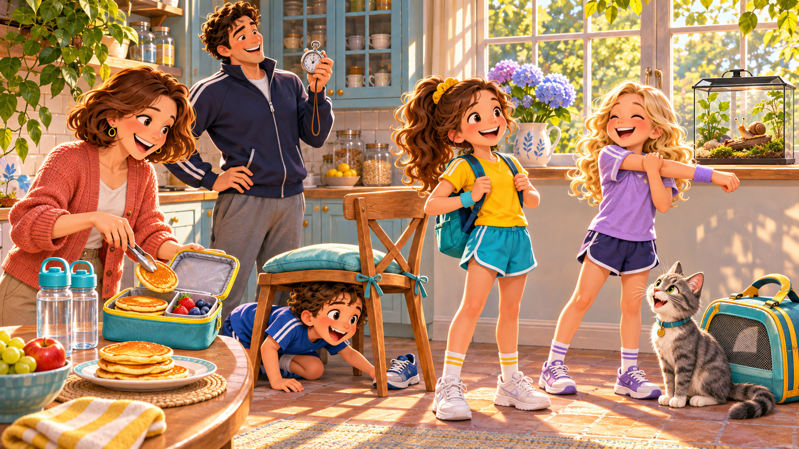
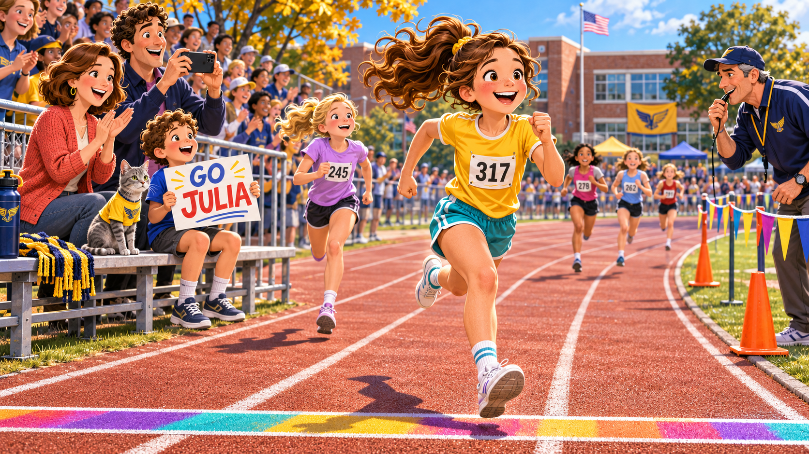
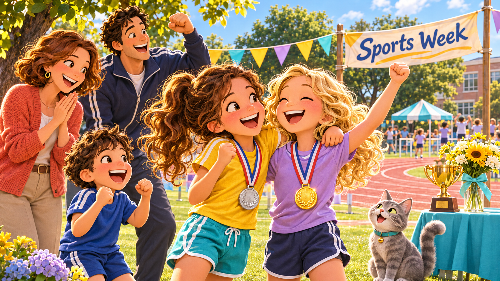
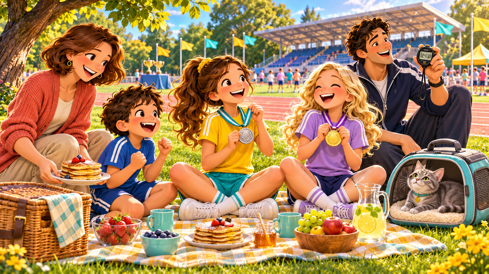

In a small American town, Julia and Emma are getting ready for the biggest Friday of the semester. Mum is baking her weekend pancakes, Dad is dusting off his old stopwatch, John is losing one sneaker (as usual), Barsik watches everyone from the window — and Turbo the snail doesn't care at all. Today you talk about it, listen to it, read about it, argue about it, and spell 30 PE words.
Round and silver on a string,
Hangs around the coach's neck.
One short breath, one loud sting —
Every runner on the deck.
It's a tiny loud …
💬 Tell me: do you like the sound of a whistle? What do you do when you hear one at school?


They are… · She looks… · I think she will…
They are about to… · The girl in red is going to… · The crowd is…
He is about to… · If he scores… · I think they…

Listen only. Don't read ahead — we read in Part B.
No wrong answers. Short guess. You'll check them after reading.
On Monday morning, before school, Julia stood in the kitchen and stared at the fridge. Dad had taped a new white paper to it with a magnet. At the top, in his careful handwriting: "JULIA'S SPORTS WEEK — road to Friday". Below, five empty rows — one for each school day.
"Every time you practise, we add a star," said Dad, drinking coffee. "By Friday, if the chart is full, your new silver stopwatch time will be faster than Emma's last month."
Julia looked at her little brother John, who was eating a pancake sideways. "You can add stars too, as long as you promise not to draw little snails everywhere." John frowned — he loved drawing Turbo. Mum laughed quietly. Barsik watched everything from the window sill, judging.
Outside, the first school bus was pulling up. Julia grabbed her backpack and ran.
By Wednesday afternoon, Julia's legs were on fire. She and Emma had already run four sprints and jumped eight long jumps. The sun was setting behind the gym.
"Shall we go home?" asked Emma, flopping onto the grass. "No!" said Julia. "Dad said if we practise every day, by Friday we will have run twenty sprints. We've only done ten." Emma groaned. "You are going to kill us." But she got up. They ran three more.
On the way home, Mum was waiting by the gate with a thermos. "Tea with honey," she said. "The runners' drink." Julia drank it in one gulp and smiled for the first time all afternoon.
Back home, she added two more stars to Dad's chart. John added a small drawing of Turbo wearing running shoes. Nobody told him to stop.
After dinner on Thursday, Dad took his old silver stopwatch off the kitchen drawer. "This thing is older than you, John," he said. The watch was dented on one side.
"I bought it before my first marathon, twenty-two years ago. I ran that race in four hours and nine minutes — slow, but I finished." Julia held it carefully. The silver was cold.
"On Friday I am giving it to you," Dad said. "You hold it during Emma's race. Afterwards, we start it for your race. When you cross the finish line — you stop it. That's YOUR time now, not mine."
Julia's eyes filled up a little. Even Barsik meowed. Turbo didn't do anything, but that's normal for a snail.
"Don't drop it," John said very seriously. "I would never drop it," said Julia.

On Friday morning, the kitchen smelled of hot pancakes and honey. Mum had made a full stack — eight for Julia, eight for the family, two for Barsik (who only ate one, as always).
"Carbs for the race," Mum said, sliding one onto Julia's plate. John was already dressed in his GO JULIA t-shirt, holding the cardboard sign.
"Look!" he shouted. "I spelled your name right this time!" Julia looked. The J was backwards. Everyone laughed except John, who looked confused.
Dad put the silver stopwatch into Julia's hand. "Pocket. Not backpack. You need to feel it." Julia nodded. She ate her pancakes slowly — Dad said fast eating equals heavy legs.
By 8:30 the whole family was walking out the door. Turbo stayed home. He was on vacation, in his small jar, eating a piece of cucumber. Julia blew him a kiss.

The whistle was in the coach's mouth. Julia was in lane 3, Emma in lane 4.
"Ready!" called the coach. Julia felt the stopwatch in her pocket, warm and round.
"Set!" Her heart was pounding so loud she thought the whole crowd could hear it.
"GO!"
The whistle blew. For one second Julia felt like she was flying. The wind, the grass, the shouting — all mixed together.
By the ten-metre mark, Emma was half a step ahead. Julia pushed harder. Fifteen metres. Twenty. Thirty. Emma was still ahead. Forty. Fifty. Julia could hear Mum's voice above everyone else: "COME ON JULIA!"
Fifty-eight metres. Sixty. The finish-line tape touched her shoulder — and then Emma's. Both girls fell forward onto the grass, laughing, gasping.
Julia's hand shot into her pocket. STOP. She looked at the stopwatch. 9.72 seconds. A new personal best. Emma was 9.65.
"You won!" said Julia. Emma hugged her. "You beat your own time by three-tenths. Dad is going to lose his mind."

That evening, Julia sat on her bedroom floor with her silver medal around her neck and the stopwatch in her hand. Barsik sat in front of her, blinking slowly, clearly bored. Turbo moved maybe one centimetre in ten minutes — his idea of listening.
"I came second," Julia told them. "But it's the best 'second' I've ever had. Nine point seven two. That's MY time now. Next year I am going to be faster than Emma — probably. And if I'm not, I'll just be faster than ME."
Barsik yawned. "Also, Dad said next summer we will do a 5K together — all four of us, plus Emma. Not you, Barsik. You will stay with Turbo."
Barsik seemed relieved. Julia smiled, put the stopwatch on her nightstand, and turned off the lamp. Tomorrow — pancakes again. Mum had promised.
practise means:sprint is:dented means:pounding here means:gasping means:personal best is:relieved means:It is Monday morning. Julia and Emma ? practising for the sports day. Julia ? going ? run the 60 metres on Friday. Emma is ? to run ? her.
"? we run one more time?" asks Emma.
"Yes, let's. ? we go home, we ? run twenty short sprints," says Julia.
By Friday they ? have run a lot. The coach is ? to blow the whistle for the last lap.
"? the sports day comes, I ? I will win a medal," says Julia with a smile. "? I don't win the gold, I'll be happy with silver. I ? even take bronze — I just want to ? on the podium."
Tip: two words stay in the bank — they're not used.
| # | Form | Use | Sports example |
|---|---|---|---|
| 1 | will + V | prediction · new decision | I think I will win. |
| 2 | be going to + V | plan I already made | I 'm going to run on Friday. |
| 3 | be about to + V | this second, right now | The whistle is about to blow. |
| 4 | will be + V-ing | in progress at a future moment | This time tomorrow I will be running. |
| 5 | will have + V3 | finished by a future deadline | By Friday we will have practised 20 times. |
| 6 | Present Continuous for future | fixed arrangement with time + person | I 'm meeting Emma at 4. |
| 7 | Present Simple for schedules | timetable · fixed schedule | PE starts at 10 on Mondays. |
| 8 | shall I…? / shall we…? | friendly suggestion / offer | Shall we practise one more time? |
| 9 | time clauses · when / before / after / if / as soon as / until | Present, NOT will | When the whistle blows, Julia will run. |
| 10 | soft futures · I'd like to / I'd love to / I hope to | dream, wish, polite plan | One day I'd love to run in the Olympics. |
| will | a prediction / a new decision | I think I will win. / OK, I 'll help you. |
|---|---|---|
| be going to | a plan I've already made | I am going to run on Friday. |
| be about to | this second, right now | The whistle is about to blow. |
will be + V-ing — a long action happening AT a future moment. This time tomorrow I will be running on the field.will have + V3 — an action FINISHED by a future deadline. By Friday we will have practised twenty times.
will after when / before / if…as soon as · before · after · until · if.Write the verb in the future form the hint asks for. One word or short phrase.
For each prompt, use exactly the form in the pill. Say your answer out loud, then tap show model.
| # | Tense | Formula | Sports example |
|---|---|---|---|
| 1 | Present Simple | V / Vs | I run every day. |
| 2 | Present Continuous | am/is/are + V-ing | I am running right now. |
| 3 | Present Perfect | have/has + V3 | I have run 20 sprints this week. |
| 4 | Past Simple | V2 / V-ed | I ran yesterday. |
| 5 | Past Continuous | was/were + V-ing | I was running when it started to rain. |
| 6 | Future · will | will + V | I will win. |
| 7 | Future · going to | am/is/are going to + V | I am going to run on Friday. |
| 8 | Future · about to | am/is/are about to + V | The whistle is about to blow. |
| 9 | Future Continuous | will be + V-ing | This time tomorrow I will be running. |
| 10 | Future Perfect | will have + V3 | By Friday we will have practised 20 times. |
| 11 | Future · PCont for arrangements | am/is/are + V-ing (time + person) | I'm meeting Emma at 4. |
| 12 | Future · Present Simple (schedules) | V / Vs (timetable) | PE starts at 10 on Mondays. |
| 13 | Future · shall I/we | shall + I/we + V | Shall we practise one more time? |
| 14 | Future · time clauses | Present after when / if / before / after / as soon as / until | When the whistle blows, Julia will run. |
| 15 | Future · soft forms | 'd like to / 'd love to / hope to | I'd love to run in the Olympics. |
Find any photo on your phone where someone is doing sport (yourself · a cousin · a friend · even a pet!). Talk about it for one minute using the frame:
Use going to, will, about to at least once each.
In the story, Julia wins silver and Emma wins gold. Write 40–60 words: what if Julia had been the winner? Use these starters:
Pick ONE of the 10 About-me questions (Q1–Q10 in Section 2). Record your answer on your phone (15–30 sec). Listen back and ask yourself:
Bring the recording — we'll listen together.

Today you talked about sports in 4 different ways, listened to Julia's story, read it, answered inference questions, filled 15 gaps, and spelled 30 PE words. Big day.
Next lesson — we open Julia's diary and read about her first swimming lesson. Dad is the swim coach (of course). Keep saying things out loud: going to · about to · will · will be … · will have ….